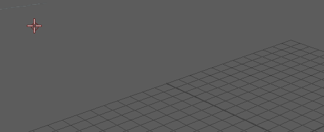

Blue Pencil 光标显示为红色圆圈，以告知您正在绘制的笔划的大小。可以更改以下 Blue Pencil 工具的大小/不透明度级别：铅笔(Pencil) 、笔刷(Brush)  、橡皮擦(Eraser)
、橡皮擦(Eraser)  、文本(Text) 、直线(Line)
、文本(Text) 、直线(Line)  、箭头(Arrow)
、箭头(Arrow)  、椭圆(Ellipse)
、椭圆(Ellipse)  和矩形(Rectangle)
和矩形(Rectangle)  工具。
工具。
、橡皮擦(Eraser) 、文本(Text) 、直线(Line) 、箭头(Arrow) 、椭圆(Ellipse) 和矩形(Rectangle) 工具。
这些设置适用于多个 Blue Pencil 工具
也可以在 Blue Pencil 工具栏中的工具图标上单击鼠标右键以查看这些设置。

调整 Blue Pencil 笔划大小

按键盘上的 B 键，同时在视口中向左或向右拖动。也可以在 Blue Pencil 工具栏中的工具图标上单击鼠标右键，以查看特定于该工具的设置。
调整 Blue Pencil 工具不透明度

按键盘上的 M 键，同时在视口中向左或向右拖动。也可以在 Blue Pencil 工具栏中的工具图标上单击鼠标右键，以查看特定于该工具的设置。
更改笔刷颜色
- 单击 Blue Pencil 工具栏中的矩形色样以打开颜色选择器(Color Chooser)，然后选择其他颜色。
注： 更改任何 Blue Pencil 工具的颜色也会更改其他笔刷的颜色。